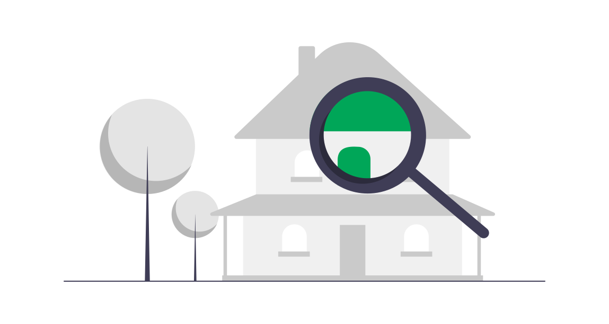

Beranda
Latar Belakang
Problematika pengelolaan zakat saat ini adalah sistematika pengelolaan
yang dianggap oleh orang-orang saat ini yang belum masuk
kategori mudah dan cepat. Padahal menurut Ahmad Atabik dalam artikelnya yang
berjudul "Manajemen Zakat yang Efektif di Era Kontemporer", zakat
harus dikelola dengan baik agas dapat mendapat kepercayaan dari masyarakat.
Dalam mengelola zakat bisa melalui manajemen. Pengelolaan zakat berbasis
manajemen dapat dilakukan dengan asumsi dasar bahwa semua aktivitas
yang terkait dengan zakat dilakukan secara professional.
Tujuan dan Manfaat
Dengan dibentuknya suatu aplikasi berbasis pengelolaan zakat, diharapkan
pengelolaan data zakat serta sistem pembayaran zakat menjadi semakin memudahkan
bagi semua pihak yang terkait. Selain itu, data pembayaran juga dapat disimpan
secara online serta otomatis langsung masuk ke database pengelola zakat. Pada akhirnya,
aplikasi ini dapat membantu panitia pengelola zakat (amil zakat) dalam pengelolaan zakat
serta pembayar zakat (muzaki). Kami mencoba menciptakan suatu aplikasi yang berfungsi
untuk membantu orang yang hendak membayar zakat agar lebih mempermudah dalam metode
pembayaran zakat.
Fitur
Fitur untuk Pembayar Zakat (Muzaki)
Membayar zakat mal melalui mobile banking dan e-wallet.
Pengguna (pembayar zakat/muzaki) dapat membayar melalui mobile banking yang
tersedia yakni BCA Mobile, BRI Syariah BNI Mobile, dan Mandiri Syariah.
Adapun untuk e-wallet yang bisa digunakan adalah Gopay, OVO, Link-Aja,
dan Dana. Tidak lupa pula, pengguna dapat menyimpan bukti pembayaran zakat mal.

Mencari masjid terdekat untuk membayar zakat fitrah
Pengguna dapat mencari masjid mana yang menyediakan pembayaran zakat fitrah.
Pengguna hanya perlu mendaftarkan diri, menunggu proses, lalu mengambil nomor antrian dan datang
sesuai dengan masjid terdekat dan waktu yang tertera di nomor antrian tersebut.
Menghitung perkiraan zakat yang dibayar dengan kalkulator zakat
Pengguna dapat menghitung perkiraan berapa nominal zakat yang harus dibayar dan
menentukan nishab emas yang ada saat ini.
Memperkaya edukasi tentang zakat dengan zakatpedia
Pengguna bisa mendapatkan ilmu lebih mengenai zakat seperti definisi, hukum
dalil, dan berbagai materi lainnya. Selain itu, pengguna juga bisa mengajukan
pertanyaan lebih lanjut mengenai zakat.
Fitur untuk Pengelola Zakat (Amil Zakat)
Memproses pembayaran zakat mal dan zakat fitrah dengan satu klik saja
Pengguna dalam hal ini panitia pengelolaan zakat atau amil zakat dapat memproses dan
mengonfirmasi semua bukti pembayaran serta bukti antrian yang masuk ke dalam sistem.
Pengguna juga dapat menghapus semua data bila nantinya sudah tidak diperlukan lagi.
Melacak daerah penyaluran zakat dengan terperinci
Aplikasi E-Zakat dapat melacak dan memberikan rekomendasi kepada amil zakat mengenai
daerah mana yang menjadi prioritas utama dalam pemberian zakat. Selain itu, E-Zakat
dilengkapi fitur rute tercepat yang dapat menghemat waktu perjalanan menuju daerah
tujuan.
Menampilkan informasi-informasi pendukung
Aplikasi E-Zakat dapat menampilkan informasi penting mengenai kepanitiaan pengelolaan
zakat seperti struktur kepanitiaan, data penerima zakat, tabel data pembayaran, dan
tabel data antrian.
Testimoni
Jabal Suryono
Pedagang
Fitur pembayaran praktis, bisa dipakai di mana saja dan kapan saja.
Kamal Kusumo
Pengurus DKM Masjid Al-Jihad
Alur konfirmasi bukti pembayaran zakat mal dan dan alur antrian zakat fitrah di
aplikasi E-Zakat membantu saya dalam pengelolaan zakat secara digital.
Johan Maulana
Karyawan Swasta
Awalnya saya kurang mengetahui mengenai zakat, tetapi fitur Zakatpedia membantu saya
untuk belajar lebih mengenai zakat dan fitur Kalkulator Zakat bisa memperkirakan
berapa zakat yang harus saya bayar.
Tentang Kami
Tim Solid merupakan empat orang mahasiswa Rekayasa Perangkat Lunak UPI Kampus Cibiru
Kami sebenarnya terdiri dua tim dari dua mata kuliah yang berbeda, tetapi menggunakan project yang sama.
Arfi, Bagus, dan Reyhan bergabung satu tim di mata kuliah Pengantar Rekayasa Perangkat Lunak. Dalam
mata kuliah ini, kami belajar mengenai cara merancang SKPL dan desain awal dari aplikasi E-Zakat.
Sedangkan Arfi, Bagus, dan Balqis bergabung satu tim di mata kuliah Struktur Data dan Algoritma. Dalam
mata kuliah ini, kami merancang pemrograman aplikasi E-Zakat dengan menggunakan stack, queue, graf, dan tree.
Arfi Triawan
Front-End Web Developer
Balqis Aqilah Syahira
UI/UX Designer
Bagus Subagja
Mobile Developer

Reyhan Agus Priyatna
UX Researcher